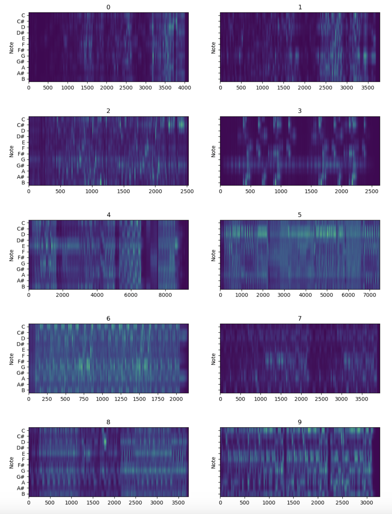
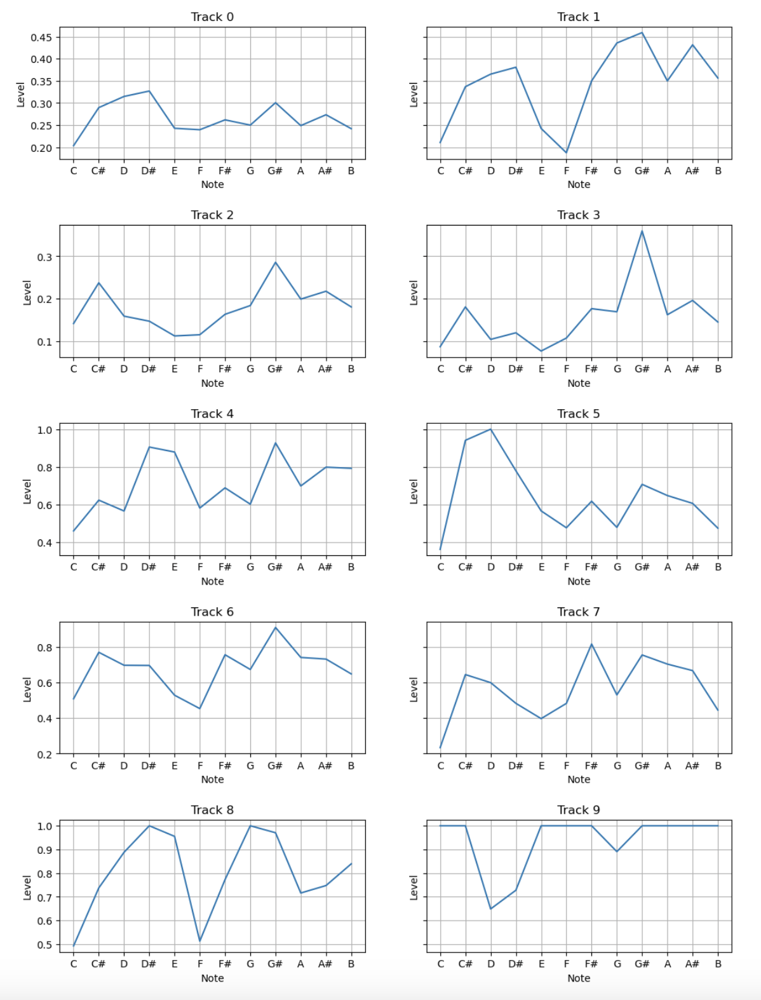
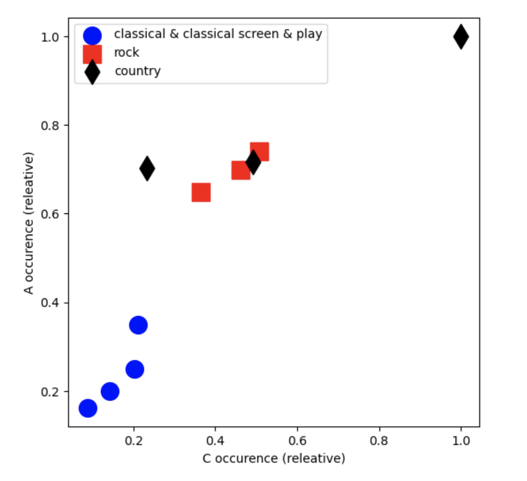
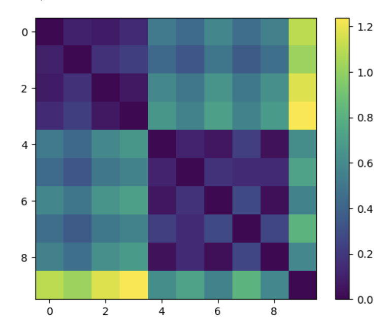
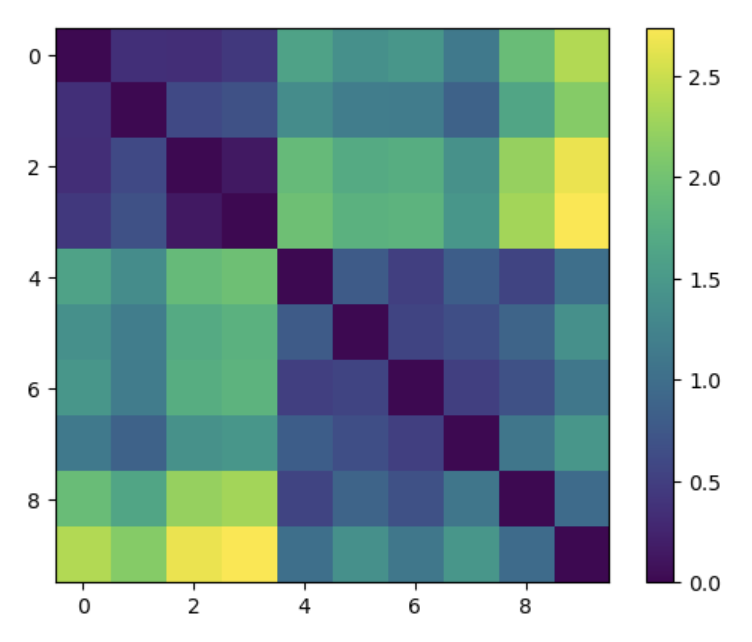

Week 10 - Audio Similarity and Transcription
Audio Similarity
In this task, I generated audio similarity matrix with Python and I decided to reuse audios from last week along with the tracks provided in this week's demo.
Here are the order and genres of the tracks:
- Tracks 0-3: Classical and Classical Screen & Play genre
- - Track 0: One Summer Day
- - Track 1: A Journey
- - Track 2: Stroll
- - Track 3: Classical Demo
- Tracks 4-6: Rock genre
- - All tracks from demo collection
- Tracks 7-9: Country genre
- - All tracks from demo collection
Chroma features
Based on these tracks, I first extracted the Chroma features in SonicVisualiser and visualised them on Python to observe the music patterns from each genre.
Below the Chromagrams (left) and mean Chroma feature vectors (right) of the 10 audios:
 Notes:
1) Chromagram illustrates the each note's characteristics played in the audio across octaves.
2) Mean Chroma Feature maps the average occurrence of all notes in an audio.
According to the Chroma feature plots, they capture distinct differences in regards of the music structure, tonality, pitches and beats patterns for each genre based on the changes of colour and note vectors.
For example,
- Tracks 0-3, as the classical music:
They initially appear to have a lower energy in volume and have a gradual increase in loudness as the audios progress toward the end. The plots of these four tracks depict that the music structure and layer are less complex because of the key scales and notes arrangement.
- Tracks 4-6, as the rock genre:
The colour patterns, emphasise with brighter green colour, are consistence and concentrated, which suggests that the rock genre have a higher density and occurrence of all notes especially in the sharps and flats.
- Tracks 7-9, as the country genre:
Music patterns are similar to the rock genre in regard to beats and consistency in notes. Nonetheless, the note density is comparatively scattered and there are obvious music sections of verse and chorus identified with the colour change.
Generating Similarity Matrices
To visualise the track distances, I generated a 2D plot and a heat map matrices for all tracks.
2D plot of track distances in the level of C's and A's occurrence:

From this plot, it illustrates the physical distance between each genre, where audio tracks in the same genre tend to gather in the same space. It shows that the rock and country genre are closer with higher occurrence of C's and A's, whereas the classical tracks are totally separated from those two genre on a lower level of the graph.
Similarity matrices of all notes (left) and of C's and A's (right):

The similarity matrix visualises the numerical distance between the 10 tracks in a heat map. In the computed results, they also show that tracks in the same genre are illustrated closer to the dark blue colour (representing number 0). An interesting find out is that the rock and country tracks lay on the similar blue colour except for Track 9 (country music).
Both computed similarity plots depict the nature and distance of each genre and tracks based on numerical data extracted from the Chromagram. They all reflect that the genre of rock and country are similar, yet a difference in note density and structures. Whereas the classical genre are distinctly different from the other two genres.
Scatter Plot of Pitches
The Scatter Plot illustrates the note length, pitch patterns and range, as well as frequency use of the notes in this full music piece. It analysed that the most common pitch range and length lies on most half notes. The highest note is C7 and lowest is A1. These data suggest that this is a lively and moderate paced piece.

Histogram
The Histogram shows the played frequency of each note in this piece. The most common note is B4 and the least frequent is C7.